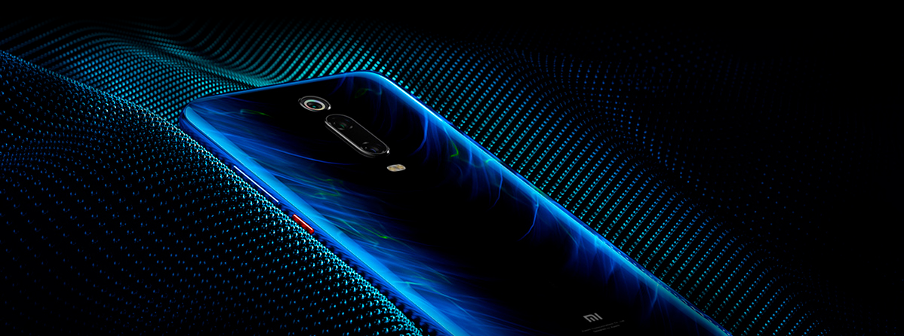
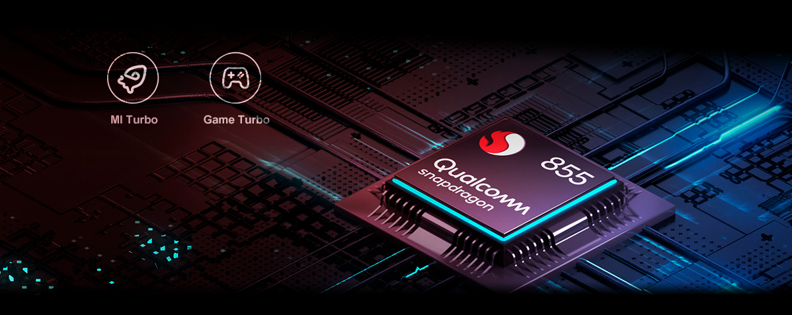
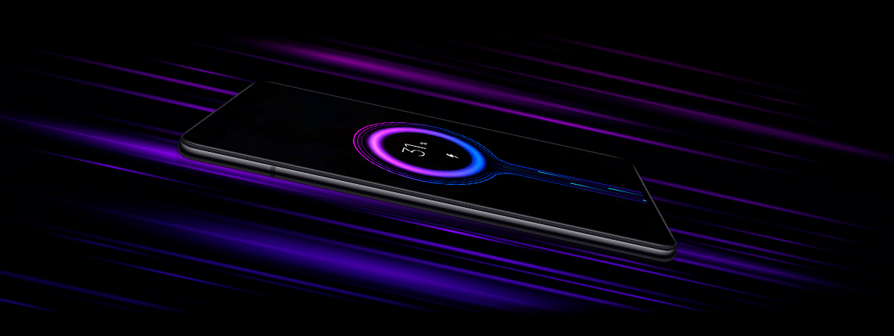
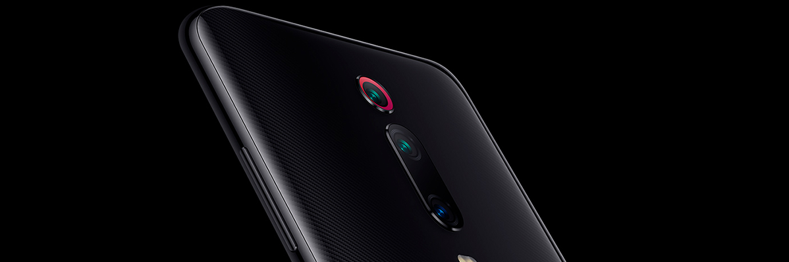
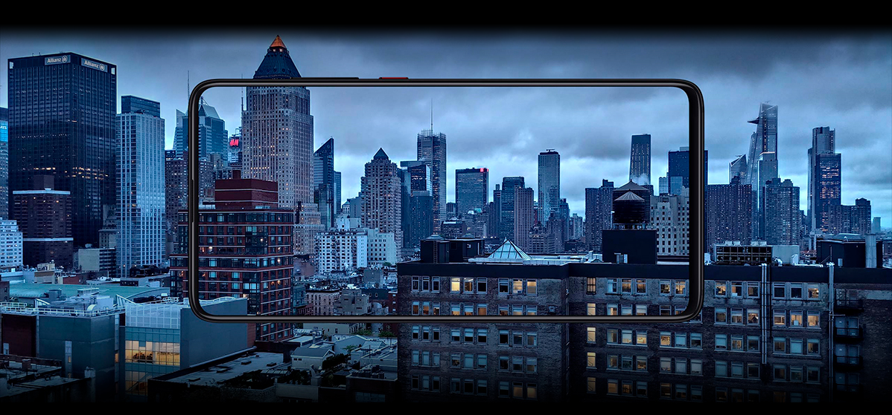
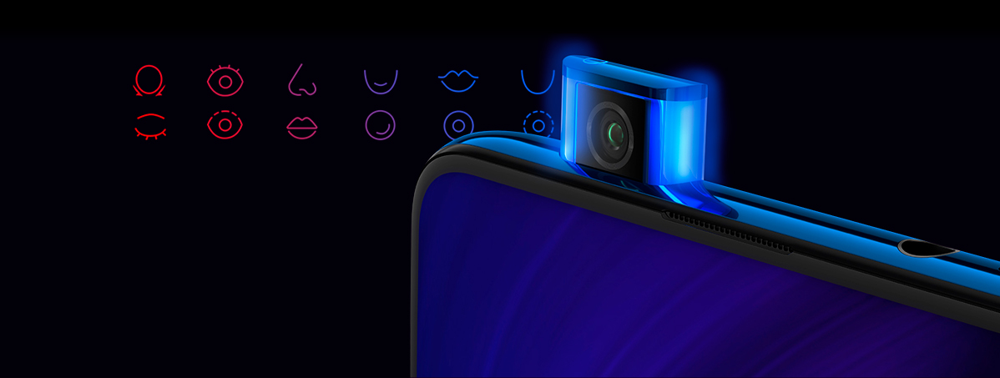
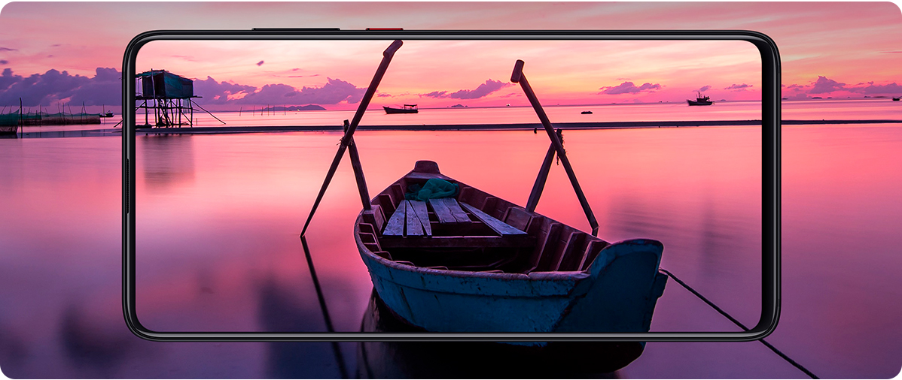

Xiaomi Mi 9T Pro
Qualcomm® Snapdragon™ 855.
48 Мп Тройная камера.
ВАШ ЛУЧШИЙ ВЫБОР
Смартфон Xiaomi Mi 9T Pro обладает выдающимися рабочими характеристиками и заслуживает самого пристального внимания. Его большой безрамочный AMOLED дисплей воспроизводит видео в превосходном качестве. Тройная основная камера обеспечивает профессиональное качество съемки, выдвижная фронтальная камера 20 Мп с искусственным интеллектом делает прекрасные одиночные и групповые селфи. Мощный современный процессор Qualcomm Snapdragon 855 позволяет использовать смартфон для выполнения задач любой сложности.
ВПЕЧАТЛЯЮЩАЯ ПРОИЗВОДИТЕЛЬНОСТЬ
Флагманский процессор Qualcomm Snapdragon 855 обеспечивает плавную и слаженную работу всех приложений и программ. Процессор отличается от своего предшественника увеличением производительности ядра на 45 % и приростом быстродействия в играх на 25 %. Системы, основанные на искусственном интеллекте, работают в три раза быстрее, выполняя несколько сложных задач одновременно. Для динамичной игры процессор оснащен двойным турборежимом (MI Turbo и GameTurbo), который оптимизирует все игровые процессы и существенно улучшает управляемость игрой. Восьмислойный графитовый радиатор увеличивает теплорассеивание на 650 %, поэтому смартфон может долго работать на максимальной производительности.
ЕМКИЙ АККУМУЛЯТОР. СУПЕРБЫСТРАЯ ЗАРЯДКА
Емкости батареи в 4000 мАч хватит на много часов работы смартфона в интенсивном режиме. Если же заряд иссяк, быстро его пополнить поможет скоростная зарядка QC4+ мощностью 27 Вт. Всего 30 минут подзарядки, и заряд восстановлен на 58 %.
ПРЕВОСХОДНЫЕ ФОТОГРАФИИ
Основная камера Xiaomi Mi 9T Pro состоит из трех блоков, что позволяет ей мгновенно переключаться на нужное фокусное расстояние в зависимости от условий съемки. Камера оснащена основным 48 Мп сенсором, длиннофокусным объективом 8 Мп и широкоугольным объективом 13 Мп.
ЗУМ И ШИРОКИЙ УГОЛ
Используя 10 – кратный зум, вы сможете приблизить и удачно запечатлеть даже удаленные объекты. При использовании широкоугольного объектива происходит автоматическая коррекция параметров, исключающая деформацию объектов на фото.
СОХРАНИТЕ КРАСОТУ НОЧИ
Xiaomi Mi 9T Pro продемонстрирует, что ночь полна ярких завораживающих событий. Фото, полученные в ночное время, поражают своей четкостью, глубиной, насыщенностью. Все это возможно благодаря большому пикселю 1.6 мкм и светочувствительному элементу ½”. Снимайте на ночных вечеринках и концертах, чтобы сохранить атмосферу и магию событий.
ВАШИ ИЗУМИТЕЛЬНЫЕ СЕЛФИ
Селфи камера 20 Мп имеет выдвижную конструкцию, она оснащена специальной лампой, захватывающей максимум цветов и оттенков. Камера превосходно справляется с групповыми фото без использования селфи – палки. Технология бьютификации на базе искусственного интеллекта подчеркивает вашу естественную привлекательность, делает более выразительным взгляд, выравнивает тон кожи, корректирует овал лица. Каждый ваш селфи – кадр заслуживает звания лучшего.
БЕЗРАМОЧНЫЙ ДИСПЛЕЙ
AMOLED дисплей Xiaomi Mi 9T Pro диагональю 6.39 дюймов заключен в минимальные рамки. За счет выдвижной конструкции фронтальной камеры площадь экрана увеличилась до невероятных 91.9 % площади фронтальной поверхности. Технология Антиблик 2.0 позволяет с комфортом смотреть видео даже на ярком солнце. Защита от мерцания на аппаратном уровне делает картинку комфортной для восприятия при низкой яркости экрана. Технология VDE снижает вредное для глаз синее излучение. В нижней части под дисплеем размещен высокоточный сканер отпечатков пальцев, которому потребуются доли секунды, чтобы разблокировать доступ владельцу смартфона.
ТЕХНОЛОГИЯ NFC И ТОЧНАЯ НАВИГАЦИЯ
Модуль NFC позволит вам оплатить покупку прикосновением смартфона к терминалу, открыть дверь или расплатиться за проезд в современном общественном транспорте. Двухчастотный GPS использует частоты L1 и L5, чтобы быстро и точно определить ваше местоположение.